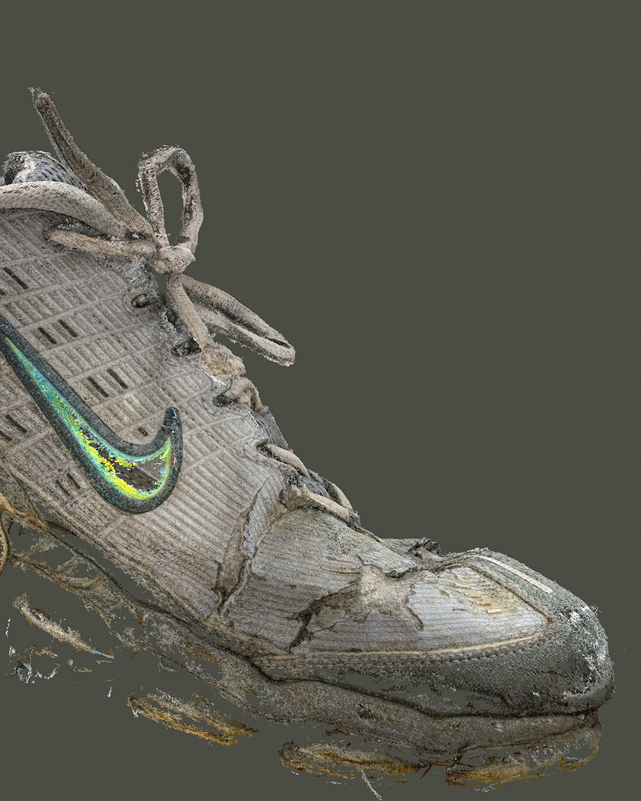
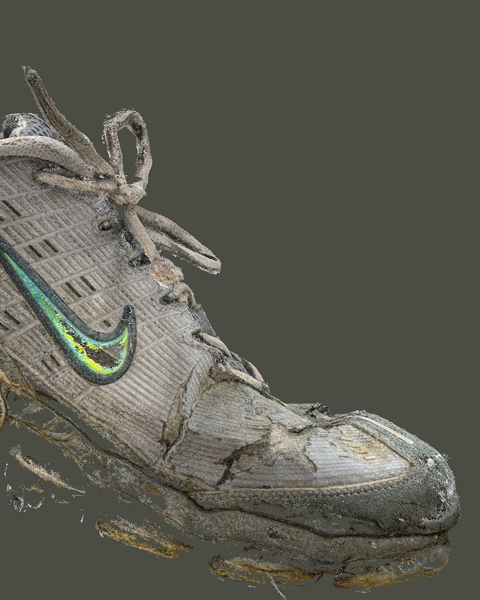
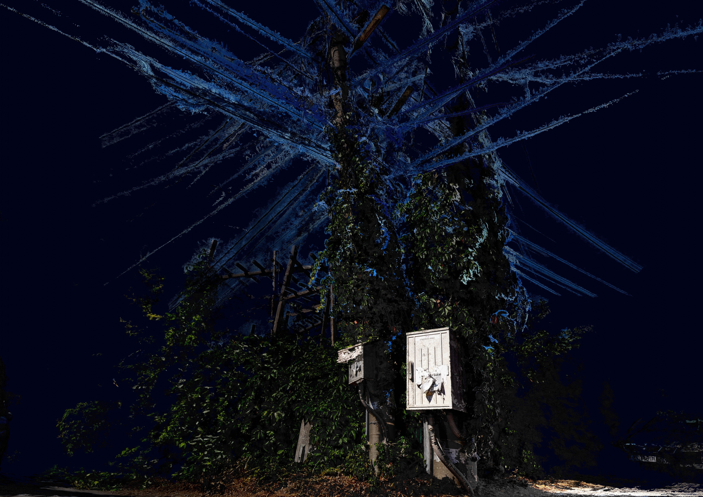
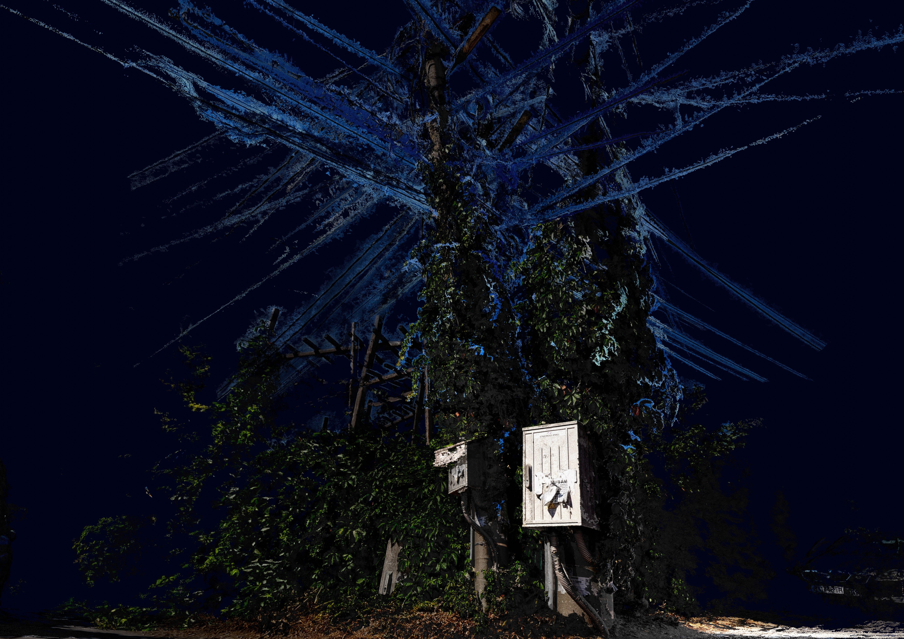

Data Migration explores the unsettling reality of how personal information has become the new currency of the digital age. In a world where every click, search, and scroll is tracked, our data moves invisibly through networks, bought and sold by corporations on an unimaginable scale, often without our awareness or consent. This hidden economy of information reflects a profound loss of privacy, as individuals are reduced to datasets fueling profit and control. The beetle in the work serves as a symbolic “bug,” a term rooted in programming that represents flaws, errors, and vulnerabilities within systems. Here, it embodies both the corruption within digital infrastructures and the parasitic relationship between users and the technologies that feed on their data. The creature’s migration mirrors that of our personal information, crawling unnoticed through coded pathways and leaving traces that can never truly be erased.

 

 
